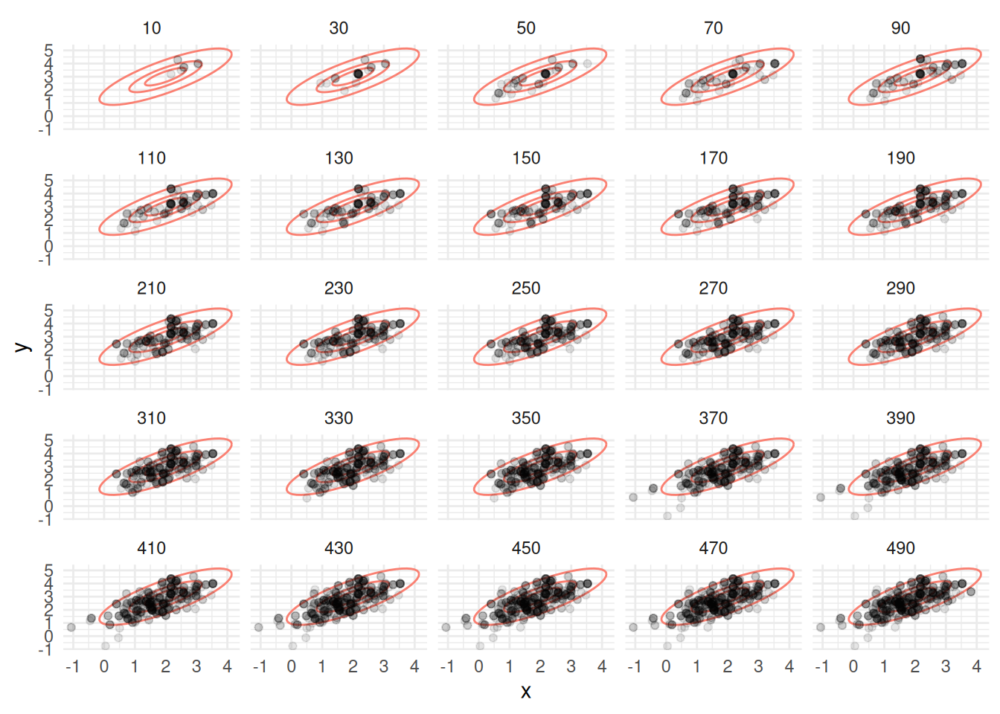
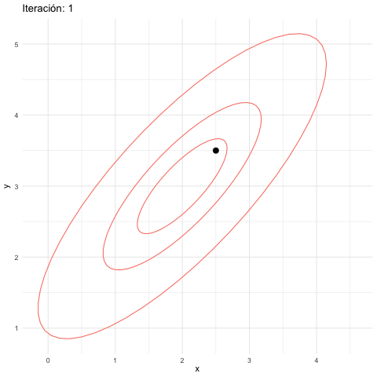
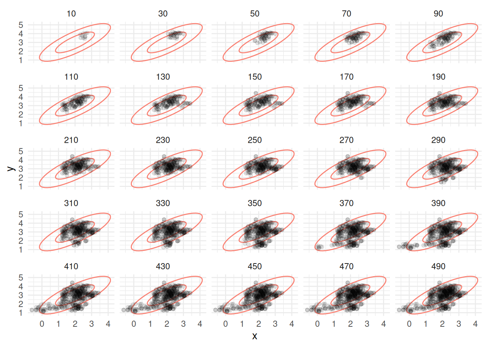
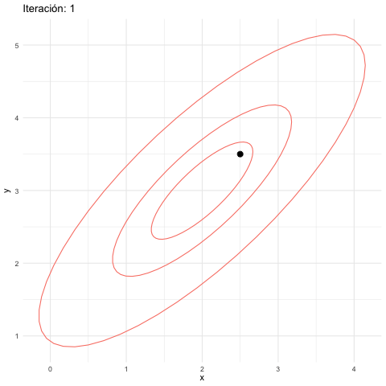
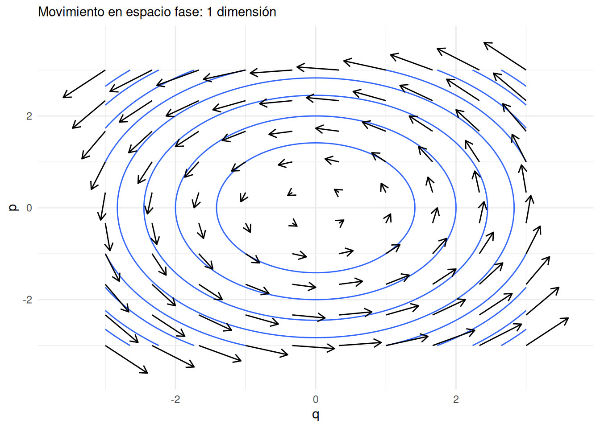
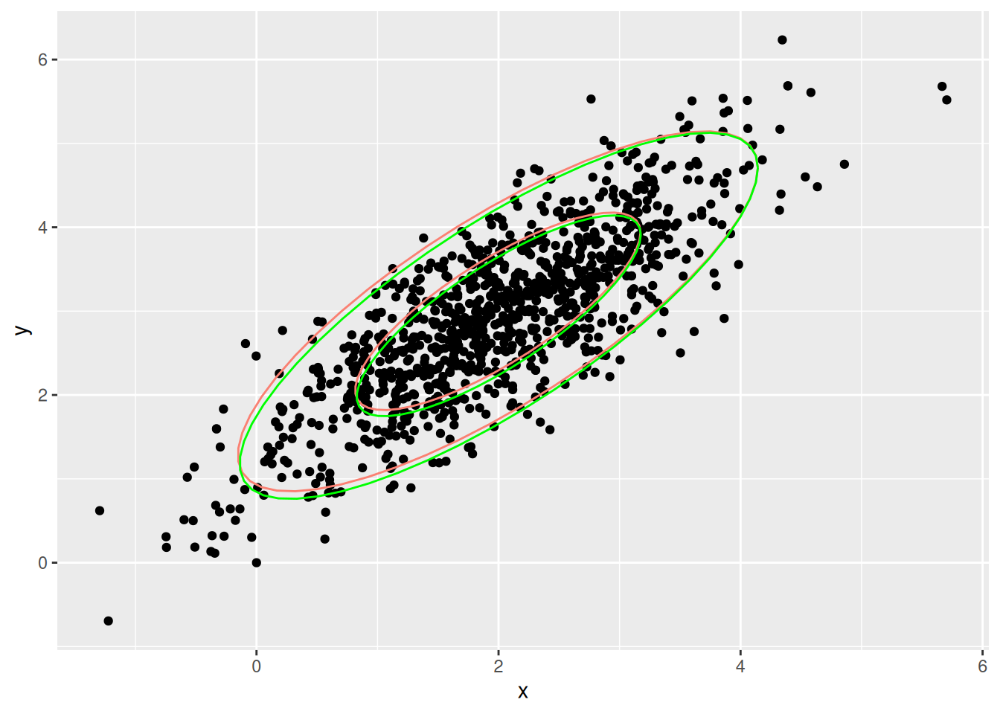
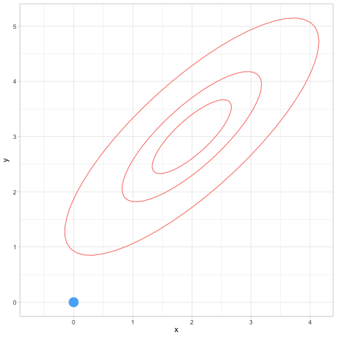
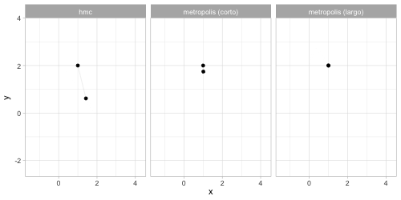

Apéndice III: Monte Carlo Hamiltoniano
Recordemos la idea básica de MCMC
Idea básica de MCMC
En MCMC, buscamos un cadena de Markov que, en el largo plazo, visite cada posible valor del parámetro proporcionalmente a la probabildad posterior del parámetro. En el caso multivariado es la misma idea: cada combinación de parámetros debe ser visitada por la cadena en proporción a su probabilidad posterior.
Balance detallado
En la sección de Metrópolis introdujimos la intuición detrás de balance detallado y convergencia para el ejemplo de las islas, retomémoslo en términos mas generales.
Supongamos que en cada paso se cumple que (balance detallado): \[{q(x|y)}p(y) = {q(y|x)}{p(x)}\] donde \(q(x|y)\) son las probabilidades de transición de nuestra cadena de Markov propuesta. Esta ecuación dice que la proporción de transiciones de \(y\) a \(x\) en relación a las transiciones de \(x\) a \(y\) es la misma que la proporción de probabilidad que hay entre \(y\) y \(x\) en la distribución objetivo.
Esta ecuación implica que si la probabilidad se distribuye como \(p(x)\), entonces al transicionar con \(q\) la probabilidad fluje de manera que se mantiene estática en \(p\), es decir \(p\) es una distribución estacionaria para la cadena de Markov producida por las transiciones.
Esto es fácil de demostrar pues \[\sum_{y} q(x|y)p(y) = \sum_{y} q(y|x)p(x) = p(x) \sum_{y} q(y|x) = p(x).\]
Bajo otros supuestos adicionales de ergodicidad (aperiodicidad y tiempos de recurrencia finitos, es decir, las transiciones mezclan bien los estados), entonces podemos simular la cadena de Markov por un tiempo suficientemente largo y con esto obtener una muestra de la distribución objetivo \(p\), es decir, la distribución estacionaria \(p(x)\) también es la distribución de largo plazo para cualquier cadena que simulemos.
¿Cómo podemos diseñar las \(q(x|y)\) correspondientes?
Comenzamos considerando distribuciones propuesta \(q_0(x|y)\), y supondremos que nuestras transiciones tienen probabilidades simétricas \(q_0(y|x) = q_0(x|y)\) (cómo en los ejemplos que vimos donde utilizamos Normales).
Entonces, cuando \(p(y)/p(x) > 1\), queremos transicionar de \(x\) a \(y\) con más frecuencia que de \(y\) a \(x\). Tiene sentido entonces que, comenzando en \(x\), si la propuesta de \(q_0(y|x)\) es \(y\), pongamos que el sistema transicione con probabilidad 1.
Sin embargo, si empezamos en \(y\) y la propuesta es \(x\), ponemos que el sistema sólo transiciona de \(y\) a \(x\) con probabilidad \(p(x)/p(y)\) (esto es justamente la descripción de Metropolis que vimos).
De esta manera, obtenemos que bajo \(q(y|x)\), \(x\) transiciona a \(y\) con probabilidad:
\[q_0(y|x) \cdot \min\{1, p(y)/p(x)\}\]
Entonces, el cociente \(\frac{q(y|x)}{q(x|y)}\) (usando también la simetría de \(q_0(y|x)\)), es igual a \(\frac{p(y)}{p(x)}\) si \(p(y)>p(x)\). Si \(p(x)>p(y)\), entonces siguiendo el mismo argumento, y por simetría de \(q_0(y|x)\), se cumple que el cociente de probabilidades es tambien igual a \(\frac{p(y)}{p(x)}\). Esto demuestra que se cumple el balance detallado.
De esta forma, balanceamos las transiciones de \(q_0(y|x)\) modificando con el proceso de aceptación y rechazo, para que la cadena de Markov resultante tenga la distribución estacionaria \(p(x)\), que es la distribución objetivo.
Recordemos también que basta con conocer \(p(x)\) módulo una constante de proporcionalidad para poder usar este algoritmo. Cuando lo usamos para simular posteriores esto es importante, pues podemos utilizar \(p(\theta|x)\propto p(x|\theta)p(\theta)\) sin tener que calcular la integral \(p(x)\) que normaliza el lado derecha de esta ecuación.
Ejemplo: Metropolis bivariado
Retomamos el ejemplo en que simulamos de una normal biivariada, en este caso con media en c(2,3) y matriz de covarianza \(\Sigma\), que supondremos es tal que la desviación estándar de cada variable es 1 y la correlación es 0.8. La matriz \(\Sigma\) tiene 1 en la diagonal y 0.8 fuera de la diagonal.
La distribución objetivo \(p\) está dada entonces (módulo una constante de proporcionalidad):
construir_log_p <- function(m, Sigma){
Sigma_inv <- solve(Sigma)
function(z){
- 0.5 * (t(z-m) %*% Sigma_inv %*% (z-m))
}
}
Sigma <- matrix(c(1, 0.8, 0.8, 1), nrow = 2)
m <- c(2, 3)
log_p <- construir_log_p(m, Sigma)Nuestro algoritno de Metrópolis:
# simulamos
M <- 50000
metropolis_mc <- function(M, z_inicial = c(0,0), log_p, delta_x, delta_y){
z <- matrix(nrow = M, ncol = 2)
z[1, ] <-z_inicial
colnames(z) <- c("x", "y")
rechazo <- 0
for(i in 1:(M-1)){
x_prop <- rnorm(1, z[i, 1], delta_x)
y_prop <- rnorm(1, z[i, 2], delta_y)
z_prop <- c(x_prop, y_prop)
q <- exp(log_p(z_prop) - log_p(z[i, ]))
if(runif(1) < q){
z[i + 1, ] <- z_prop
} else {
rechazo <- rechazo + 1
z[i + 1, ] <- z[i, ]
}
}
print(rechazo / M)
z_tbl <- as_tibble(z) |>
mutate(n_sim = row_number())
z_tbl
}
z_tbl <- metropolis_mc(M, c(2.5, 3.5), log_p, 1.0, 1.0)## [1] 0.6014Vemos que tenemos una tasa alta de rechazos. ¿Por qué? Veamos cómo se ven las simulaciones hasta 500 iteraciones:
graf_tbl <- map_df(seq(10, 500, 20), function(i){
z_tbl |> filter(n_sim <= i) |> mutate(num_sims = i)
})
ggplot(graf_tbl, aes(x, y)) +
elipses_normal +
geom_point(alpha = 0.1) +
facet_wrap(~num_sims) + theme_minimal()
library(gganimate)
anim_mh_1 <- z_tbl |> filter(n_sim < 50) |>
ggplot() +
geom_point(aes(x, y, group = n_sim), size = 3) +
transition_reveal(n_sim) +
elipses_normal +
labs(title = 'Iteración: {frame_along}') +
theme_minimal()
anim_save(animation = anim_mh_1, filename = "figuras/mh-1-normal.gif",
renderer = gifski_renderer())
Metropolis Hastings
Observaciones:
- Los puntos que tienen intensidad alta son puntos donde hubo varios rechazos. Esto es porque las propuestas a veces caen en elipses de baja probabilidad (en la gráfica mostramos una elipse de 50% probabilidad y otra de 95%).
- Esto se debe a que los saltos en cada dirección son de desviación estándar 1, y esto fácilmente nos lleva a una zona de alta probabilidad a una de baja probabilidad.
- Sin embargo, a largo plazo, vemos cómo la cadena está visitando las regiones de alta probabilidad con aparentemente la frecuencia correcta.
Podemos entonces proponer saltos más chicos, por ejemplo:
z_tbl <- metropolis_mc(M, c(2.5, 3.5), log_p, 0.2, 0.2)## [1] 0.15472graf_tbl <- map_df(seq(10, 500, 20), function(i){
z_tbl |> filter(n_sim <= i) |> mutate(num_sims = i)
})
ggplot(graf_tbl, aes(x, y)) +
stat_ellipse(data = sims_normal, aes(x, y),
level = c( 0.9), type = "norm", colour = "salmon") +
stat_ellipse(data = sims_normal, aes(x, y),
level = c( 0.5), type = "norm", colour = "salmon") +
geom_point(alpha = 0.1) +
facet_wrap(~num_sims) + theme_minimal()
anim_mh_2 <- z_tbl |> filter(n_sim < 150) |>
ggplot() +
geom_point(aes(x, y, group = n_sim), size = 3) +
transition_reveal(n_sim) +
elipses_normal +
labs(title = 'Iteración: {frame_along}') +
theme_minimal()
anim_save(animation = anim_mh_2, filename = "figuras/mh-2-normal.gif",
renderer = gifski_renderer())
Metropolis Hastings salto chico
Observaciones:
- En este caso tenemos una tasa de aceptación más alta.
- Sin embargo, la cadena parece “vagar” en la regiones de probabilidad alta, y tiene dificultades para explorar correctamente estas regiones: se comporta localmente como una caminata aleatoria.
- Sin embargo, a largo plazo, vemos cómo la cadena está visitando las regiones de alta probabilidad con aparentemente la frecuencia correcta.
En el algoritmo de Metropolis Hastings hay una tensión natural entre el tamaño de salto y la tasa de aceptación. Si el tamaño de los saltos es muy grande, la tasa de aceptación puede ser baja y esto producen ineficiencias. Si el tamaño de los saltos es muy chico, la tasa de aceptación es más alta, pero esto también es ineficiente pues la cadena puede explorar muy lentamente el espacio de parámetros.
Existen métodos que pueden superar este problema, como son muestreo de Gibbs y Monte Carlo Hamiltoniano. El primero ya lo discutimos, y vimos que requiere poder simular fácilmente de cada parámetro dados los otros, y esto no siempre es posible. Veremos más el segundo, donde usaremos información del gradiente de la distribución objetivo para proponer exploración más eficiente.
Monte Carlo Hamiltoniano
Una manera de mejorar la exploración de Metropolis es utilizar una distribución de propuestas más apropiada. La intuición en el caso anterior es:
- Hay direcciones de más curvatura de la posterior que otras: movimientos relativamente chicos en las direcciones de alta curvatura nos llevan a regiones de probabilidad demasiado baja, y entonces tendemos a rechazar. Pero hacer movimientos aún más chicos para evitar rechazos nos lleva a explorar muy lentamente el espacio de parámetros.
- Podríamos evitar esto si nuestros saltos siguieran la curvatura natural de la distribución, como una pelota que rueda por la superficie de la distribución objetivo (con signo negativo, de forma que regiones de probabilidad alta sean valles o regiones bajas).
La idea de HMC es considerar el problema de muestrear de una distribución como un problema físico, donde introducimos aleatoridad solamente en cuanto a la “energía” de la pelota que va a explorar la posterior. Inicialmente impartimos un momento tomado al azar a la pelota, seguimos su trayectoria por un tiempo y el lugar a donde llega es nuestra nueva simulación. Esto permite que podamos dar saltos más grandes, sin “despeñarnos” en regiones de probabilidad muy baja y al menos teóricamente, evitar del todo los rechazos (veremos que en la implementación de todas formas necesitaremos implementar algunos rechazos para mejorar eficiencia).
Adicionalmente, veremos que si definimos el sistema físico apropiadamente, es posible obtener ecuaciones de balance detallado, lo cual en teoría nos garantiza una manera de transicionar que resultará a largo plazo en una muestra de la distribución objetivo.
Formulación Hamiltoniana 1: introducción
Primero veremos cuál es la formulación Hamiltoniana (muy simple) de un sistema físico que nos sirve para encontrar la trayectoria de partículas del sistema. Consideremos una sola partícula cuya posición está dada por \(q\), que suponemos en una sola dimensión. La partícula rueda en una superficie cuya altura describimos como \(V(q)\), y tiene en cada instante tiene momento \(p = m\dot{q}\).
El Hamiltoniano es la energía total de este sistema, en el espacio fase que describe el estado de cada partícula dadas su momento y posición \((p,q)\), y es la suma de energía cinética más energía potencial:
\(H(p,q) = T(p) + V(q)\)
donde \(V(q) = q^2/2\) está dada y \(T(p) = \frac{p^2}{2m}\), de modo que
\[H(p, q) = \frac{p^2}{2m} + V(q) = \frac{p^2}{2m} + \frac{q^2}{2}\]
Ahora consideremos las curvas de nivel de \(H\) (energía total constante), que en este caso se conservan a lo largo del movimiento de la partícula. Como sabemos por cálculo, estas curvas son perpendiculares al gradiente del Hamiltoniano, que es \((\partial{H}/\partial{p}, \partial{H}/\partial{q})\). El movimiento de las partículas, sin embargo, es a lo largo de las curvas de nivel, de manera que el flujo instantáneo debe estar dado por el gradiente de \(H\) rotado 90 grados, es decir, por \((\partial{H}/\partial{q}, -\partial{H}/\partial{p})\).
Entonces tenemos que el movimiento de la partícula debe cumplir las ecuaciones de Hamilton:
\[\frac{dp}{dt} = -\frac{\partial{H}}{\partial{q}}, \frac{dq}{dt} = \frac{\partial{H}}{\partial{p}}\] Simplificando y usando la definición de \(H\), obtenemos que \[\frac{dq}{dt} = \frac{p}{m}, \frac{dp}{dt} = -\frac{\partial{V}}{\partial{q}} = -q\] Ilustramos este campo vectorial en la siguiente gráfica, donde escogemos \(V(q) = q^2/2\), \(m=1\), y dibujamos algunas curvas de nivel del Hamiltoniano:
espacio_fase_1 <- tibble(q = seq(-3, 3, length.out = 1000),
p = seq(-3, 3, length.out = 1000)) |>
tidyr::expand(q, p) |>
mutate(dq = p, dp = -q) |>
mutate(H = p^2/2 + q^2/2)
espacio_fase <- tibble(p = seq(-3, 3, length.out = 10), q = seq(-3, 3, length.out = 10)) |>
tidyr::expand(p, q) |>
mutate(dq = p, dp = -q)
espacio_fase |>
ggplot(aes(p, q)) +
geom_contour(data = espacio_fase_1, aes(x = q, y = p, z = H)) +
geom_segment(aes(xend = p + dp/5, yend = q + dq/5),
arrow = arrow(length = unit(0.1, "inches"))) +
theme_minimal() +
labs(subtitle = "Movimiento en espacio fase: 1 dimensión")
Ojo: este no es le movimiento de una partícula en dimensión 2: es el movimiento de la partícula en el espacio fase \((q,p)\), y la variable de posición \(q\) es de dimensión 1. Los ciclos de la gráfica muestran como conforme la partícula se mueve, energía potencial y cinética se intercambian a lo largo de su trayectoria en un “hilo” o curva de nivel.
Formulación Hamiltoniana 2: densidades de probabilidad
Consideremos una partícula en el espacio de parámetros \(\theta\). En esta formulación, si \(\theta\) son los parámetros de interés, consideramos la energía potencial del sistema como \[V(\theta) = -\log p(\theta)\]
donde \(p(\theta)\) es la distribución objetivo.
Buscamos simular del sistema con ecuaciones de movimiento para \(\theta\). Como hicimos antes, vamos a “levantar” al espacio fase incluyendo el momento, que denotaremos como \(\rho\). La energía cinética, en el caso más simple, podemos definirla (en la práctica existen reescalamientos) como como \[T(\rho) =\frac{1}{2}\sum_i \rho_i^2\]
la energía cinética es proporcional al momento cuadrado, pues el momento es masa por velocidad.
El Hamiltoniano por definición \(H(\rho, \theta) = T(\rho) + V(\theta)\), y las ecuaciones de Hamilton son las mismas que arriba, que en este caso nos dan
\[\frac{d\theta}{dt} = \rho, \frac{d\rho}{dt} = \nabla(\log(p(\theta)).\]
Si resolvemos estas ecuaciones, podemos entonces simular del sistema como sigue:
- Dado un punto inicial \(\theta\), escogemos un momento inicial \(\rho\) al azar, por ejemplo cada componente normal \(N(0,1)\) (en la práctica existe un reescalamiento, pero en general queremos que \(p(\rho) = p(-\rho)\)). Es decir, agregamos inicialmente una cantidad aleatoria de energía a la partícula.
- Usando las ecuaciones de Hamilton, actualizamos la posición \(\theta\) y el momento de la partícula un cierto tiempo \(t\) fijo, de manera que no quedemos muy cerca del valor inicial, pero tampoco hagamos demasiado trabajo computacional.
- La posición nueva \(\theta^*\) es aceptada como nuestra nueva simulación (si el paso 2 es exacto, pero frecuentemente no lo es).
- Repetimos los pasos 1-3 un número suficiente de veces para obtener simulaciones de la posterior.
Este método produce simulaciones de la distribución objetivo bajo condiciones de regularidad. Podemos demostrar por ejemplo, que se cumple el balance detallado.
Balance detallado para HMC
Supongamos que las transiciones que da este sistema son \(q(y|x)\). Nótese que dado el momento simulado, tenemos el estado \((\rho, x)\), y la transición \(x\to y\) es determinista, gobernada por las ecuaciones de Hamilton. Escribimos la transición como \[(\rho, x) \to (\rho^*, y).\] Nótese que \(\rho\) y \(x\) determinan la transición, de modo que
\[p(x)q(y|x) = p(x)p(\rho) = \exp(-H(\rho, x)) = \exp(-H(\rho^*, y))\] Que es cierto por conservación de la energía total y la transición sigue exactamente trayectorias del Hamiltoniano. Esta última cantidad, usando un argumento similar, es igual a
\[p(y)p(\rho^*) = p(y)p(-\rho^*) = p(y) q(x|y)\] La segunda igualdad se da porque \(p(\rho)\) es Gaussiana (simétrica). Y finalmente, la última igualdad se da porque si necesitamos momento \(\rho\) para llegar de \(x\) a \((\rho^*, y)\), entonces necesitamos \(-\rho^*\) (volteamos la velocidad final) para llegar de \(y\) a \((\rho, x)\), pues el sistema físico es reversible.
Nótese que este argumento se rompe si por ejemplo es imposible transicionar de un punto a otro (por ejemplo, cuando la distribución objetivo \(p\) tiene dos regiones separadas de probabilidad positiva).
Integración de las ecuaciones de Hamilton
Para aproximar soluciones de estas ecuaciones diferenciales utilizamos el integrador leapfrog, en el que hacemos actualizaciones alternadas de posición y momento con un tamaño de paso \(\epsilon\) chico. Hacemos este paso un número \(L\) de veces, para no quedar muy cerca del valor inicial.
En nuestro ejemplo, actualizaríamos por ejemplo el momento a la mitad del paso:
\[\rho_{t+\epsilon/2} = \rho_t - \frac{\epsilon}{2}\nabla(\log(p(\theta_t)))\] Seguido de una actualización de la posición:
\[\theta_{t+\epsilon} = \theta_t + \epsilon \rho_{t+\epsilon/2}\] y finalmente otra actualización del momento:
\[\rho_{t+\epsilon} = \rho_{t+\epsilon/2} - \frac{\epsilon}{2}\nabla(\log(p(\theta_{t+\epsilon})))\] Al final de este proceso, encontraremos que por errores numéricos, quizá el Hamiltoniano varió un poco. Si esto sucede, podemos hacer un paso de aceptación y rechazo como en Metropolis Hastings, donde la probabilidad de aceptar es
\[\min\left(1, \exp(H(\rho,\theta) - H(\rho^{*},\theta^{*}))\right)\] donde \(\rho^{*}\) y \(\theta^{*}\) son los valores de momento y posición nuevos y \(H(\rho,\theta)\) es el Hamiltoniano en el paso anterior.
Observaciones:
- Un caso posible obtengamos desbordes o casi desbordes numéricos del momento o la posición (el Hamiltoniano en el punto inicial es órdenes de magnitud diferente que el inicial, ver el manual de Stan ). Esto indica problemas graves con el algoritmo de integración, y en general marcamos estas iteraciones como divergentes. Estas fallas pueden producir, como veremos, exploración insuficiente de la distribución objetivo.
- Si queremos usar HMC directamente, es delicado afinar el tamaño de paso, la distribución de propuesta para el momento, y el número de saltos \(L\). En Stan, que usa una variación de HMC, estos valores son ajustados en el periodo de calentamiento o warmup, antes de
Ejemplo: HMC en una distribución normal bivariada
Primero calculamos el gradiente que requerimos. En este caso, podemos hacerlo analíticamente:
construir_log_p <- function(m, Sigma){
Sigma_inv <- solve(Sigma)
function(z){
- 0.5 * (t(z-m) %*% Sigma_inv %*% (z-m))
}
}
Sigma <- matrix(c(1, 0.8, 0.8, 1), nrow = 2)
m <- c(2, 3)
log_p <- construir_log_p(m, Sigma)
# en diferenciación automática, el siguiente constructor
# puede tomar como argumento log_p, pero aquí la escribimos
# explícitamente
construir_grad_log_p <- function(m, Sigma){
Sigma_inv <- solve(Sigma)
function(theta){
- Sigma_inv %*% (theta-m)
}
}
grad_log_p <- construir_grad_log_p(m, Sigma)
construir_H <- function(m, Sigma){
Sigma_inv <- solve(Sigma)
function(theta, rho){
- log_p(theta) + 0.5 * sum(rho^2)
}
}
H <- construir_H(m, Sigma)
log_p(c(1,3))## [,1]
## [1,] -1.388889grad_log_p(c(1,3))## [,1]
## [1,] 2.777778
## [2,] -2.222222Ahora, implementamos el algoritmo de HMC. Primero, definimos una función
hamilton_mc <- function(n, theta_0 = c(0,0), log_p, grad_log_p, epsilon, L){
p <- length(theta_0)
theta <- matrix(0, n, p)
theta[1, ] <- theta_0
rho <- matrix(0, n, p)
theta_completa <- matrix(0, n*L, p)
theta_completa[1, 0] <- theta_0
rho_completa <- matrix(0, n*L, p)
indice_completa <- 2
rechazo <- 0
for(i in 2:n){
prop_rho <- rnorm(p)
rho[i-1, ] <- prop_rho
prop_theta <- theta[i-1, ]
for(t in 1:L){
prop_rho <- prop_rho + 0.5 * epsilon * grad_log_p(prop_theta)
prop_theta <- prop_theta + epsilon * prop_rho
prop_rho <- prop_rho + 0.5 * epsilon * grad_log_p(prop_theta)
theta_completa[indice_completa,] <- prop_theta
rho_completa[indice_completa,] <- prop_rho
indice_completa <- indice_completa + 1
}
q <- min(1, exp(H(theta[i-1, ], rho[i-1, ]) -
H(prop_theta, prop_rho)))
if(runif(1) < q){
theta[i, ] <- prop_theta
} else {
rechazo <- rechazo + 1
theta[i, ] <- theta[i-1, ]
rho[i, ] <- rho[i-1, ]
theta_completa[indice_completa - 1,] <- theta[i-1, ]
rho_completa[indice_completa - 1,] <- rho[i-1, ]
}
}
print(rechazo / n)
list(sims = tibble(x = theta[,1], y = theta[,2]),
trayectorias = tibble(x = theta_completa[,1], y = theta_completa[,2]) |>
mutate(iteracion = rep(1:n, each = L), paso = rep(1:L, times = n)))
}Revisamos que la muestra aproxima apropiadamente nuestra distribución
set.seed(10)
hmc_salida <- hamilton_mc(1000, c(0,0), log_p, grad_log_p, 0.2, 12)## [1] 0.016ggplot(hmc_salida$sims, aes(x = x, y = y)) + geom_point() +
stat_ellipse(data = sims_normal, aes(x, y),
level = c(0.9), type = "norm", colour = "salmon") +
stat_ellipse(data = sims_normal, aes(x, y),
level = c( 0.5), type = "norm", colour = "salmon") +
stat_ellipse(level = c( 0.9), colour = "green", type = "norm") +
stat_ellipse(level = c( 0.5), colour = "green", type = "norm") 
tray_tbl <- hmc_salida$trayectorias
head(tray_tbl)## # A tibble: 6 × 4
## x y iteracion paso
## <dbl> <dbl> <int> <int>
## 1 0 0 1 1
## 2 -0.0185 0.0409 1 2
## 3 -0.0757 0.231 1 3
## 4 -0.148 0.545 1 4
## 5 -0.201 0.940 1 5
## 6 -0.192 1.37 1 6library(gganimate)
anim_hmc <- ggplot(tray_tbl |> mutate(iter = 4*as.numeric(paso == 1),
s = as.numeric(paso == 2)) |>
filter(iteracion < 30) |>
mutate(tiempo = row_number()) |>
mutate(tiempo = tiempo + cumsum(50 * s)),
aes(x = x, y = y)) +
geom_point(aes(colour = iter, alpha = iter, size = iter, group = tiempo)) +
geom_path(colour = "gray", alpha = 0.5) +
transition_reveal(tiempo) +
elipses_normal +
theme(legend.position = "none")
anim_save(animation = anim_hmc, filename = "figuras/hmc-normal.gif",
renderer = gifski_renderer())
HMC
Observaciones:
- Nótese que ahora podemos dar pasos más grandes a lo largo de los lugares donde concentra mayor probabilidad.
- Esto implica dos cosas: evitamos el comportamiento de caminata aleatoria (pasos muy cortos), y también tasas de rechazo alto (cuando los pasos son muy grandes en MH)
- El algoritmo utiliza información adicional: además de calcular la posterior, como en metropolis, es necesario calcular también el gradiente de la posterior.
- Este algoritmo hace más trabajo para cada iteración (requiere la integración leapfrog), pero cada iteración es más informativa
- Bien afinado, funciona para problemas de dimensión alta (cientos o miles de parámetros), donde geométricamente la densidad está concentrada en un espacio geométricamente chico. Existen todavía dificultades que discutiremos en otros modelos más adelante.
Observamos que hasta ahora no hemos aplicado estos algoritmos para simular de la posterior de un modelo: hemos tomado distribuciones fijas y usamos MCMC para simular de ellas. El proceso para una posterior es el mismo, pero usualmente más complicado pues generalmente involucra mucho más parámetros y una posterior que no tiene una forma analítica conocida.
Sin embargo, la aplicación para una posterior es la misma: siempre podemos calcular el logaritmo de la posterior (al menos hasta una constante de proporcionalidad), y siempre podemos usar diferenciación automática para calcular el gradiente de la log posterior. Podemos aplicar entonces HMC o Metropolis.
Comparación de HMC y Metropolis
Finalmente, haremos una comparación entre el desempeño de HMC y Metropolis en el caso de la distribución normal. Utilizaremos otra normal bivariada con más correlación.
set.seed(737)
Sigma <- matrix(c(1, -0.9, -0.9, 1), nrow = 2)
m <- c(1, 1)
log_p <- construir_log_p(m, Sigma)
grad_log_p <- construir_grad_log_p(m, Sigma)
system.time(hmc_1 <- hamilton_mc(1000, c(1,2), log_p, grad_log_p, 0.2, 12))## [1] 0.042## user system elapsed
## 0.067 0.001 0.066system.time(metropolis_1 <- metropolis_mc(1000, c(1,2), log_p, 0.2, 0.2))## [1] 0.204## user system elapsed
## 0.015 0.000 0.015system.time(metropolis_2 <- metropolis_mc(1000, c(1,2), log_p, 1, 1))## [1] 0.692## user system elapsed
## 0.016 0.000 0.016sims_hmc <- hmc_1$sims |> mutate(n_sim = row_number()) |>
mutate(algoritmo = "hmc")
sims_metropolis_1 <- metropolis_1 |>
mutate(algoritmo = "metropolis (corto)")
sims_metropolis_2 <- metropolis_2 |>
mutate(algoritmo = "metropolis (largo)")
sims_comp <- bind_rows(sims_hmc, sims_metropolis_1, sims_metropolis_2)
anim_comp <- ggplot(sims_comp |> filter(n_sim < 200)) +
transition_reveal(n_sim) +
theme(legend.position = "none") +
geom_path(aes(x, y), colour = "gray", alpha = 0.2) +
geom_point(aes(x, y, group = n_sim)) +
facet_wrap(~algoritmo)
anim_save(animation = anim_comp, filename = "figuras/comparacion-normal.gif", height = 250, width = 500,
units = "px",
renderer = gifski_renderer())
Comparación
** Comparaciones de eficiencia Nótese que en general no tiene sentido** comparar algoritmos usando el número de simulaciones que puede producir por unidad de tiempo. La comparación correcta involucra comparar cuánto tiempo requerimos para aproximar con cierto grado de precisión a la posterior (o más bien, resúmenes de la posterior). Algunos algoritmos son pueden ser rápidos porque producen rápidamente muchas simulaciones poco informativas, y otros son rápidos porque cada simulación que producen es muy informativa. Veremos más adelante el concepto de muestra efectiva.
HMC en Stan
En Stan se incluyen tres componentes adicionales importantes para estimar posteriores de manera eficiente:
- Periodos de warm-up (calentamiento) y sampling (muestreo). En el periodo de calentamiento, el muestreador afina tamaños de paso, escalamiento de la distribución de propuesta (normal multivariada), y otros parámetros de manera automática.
- Implementación de diferenciación automática para no tener que calcular el grandiente de la log posterior directamente. A partir del código que damos, se crean automáticamente funciones que calculan el grandiente (no es una aproximación numérica).
- Implementación de HMC sin vueltas en U (NUTS): una afinación adicional es dinámicamente adaptar el número de pasos de integración para evitar “regresos”, como vimos que sucedía en los ejemplos de arriba. Ver por ejemplo aquí, o la documentación de Stan.